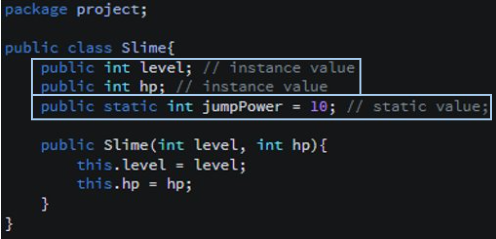

Java 프로그래밍 언어를 공부할 때 메모리 구조에 대한 이해는 반드시 요구되는 기본 사항이다.
메모리 구조에 대해 명확하게 파악하고 있으면 어떤 식으로 인스턴스가 생성되며, GC[Garbage Collector]가 정확히 어떤 방식으로 동작하는지, static value 는 어떤 영역에 할당되는 지 등 다양한 심화 지식을 이해하는 데 도움이 된다.
이번 포스팅 에서는 자바의 메모리 구조와 스태틱 키워드에 대하여 정리해 보고자 한다.
* 개인적인 공부 내용을 기록하는 용도로 작성한 글 이기에 잘못된 내용이 있을 수 있으며,
혹여나 틀린 정보가 있다면 언제든지 댓글로 남겨 주시기 바랍니다!
목차
#1 Java Memory Structure
#2 Static
- 멤버 변수의 구분
- 스태틱 변수 접근
- 언제 스태틱 변수를 사용해야 할까?
- 스태틱 메서드
#1 Java Memory Structure
자바의 메모리 구조는 크게 1. 메서드 영역 [Method Area] 2. 스택 영역 [Stack Area] 3. 힙 영역 [Heap Area] 등 으로 구분된다. (그 이외에도 PC 레지스터, 네이티트 메소드 스택 등이 있지만 크게 중요한 내용은 아니니 여기서는 설명하지 않는다.)
1. 메서드 영역 [Method Area]
클래스 정보를 보관하거나, 프로그램을 실행하는데 필요한 공통 데이터를 관리하는 영역이다. 클래스, 메소드, 상수, static 변수 등의 정보를 저장한다.
2. 스택 영역 [Stack Area]
실제로 프로그램이 실행되는 영역이다. 메서드 호출시 스택 프레임이 생성되어 스택 구조로 스택 영역에 쌓이게 된다. 메소드 호출과 관련된 지역 변수, 메소드 호출, 리턴 값 등이 저장된다.
3. 힙 영역 [Heap Area]
new 키워드를 통해 할당된 동적으로 생성된 객체(인스턴스)와 배열이 저장되는 영역이다. GC[Garbage Collector] 처리가 실행되는 중요한 영역으로, 쓰레드의 수 만큼 힙 영역이 생성된다.
#2 Static
멤버 변수의 구분

멤버 변수는 static keyword 여부에 따라 다음과 같이 두 가지로 구분된다.
1. instance value : static keyword가 붙지 않은 변수로, 인스턴스가 생성될 때 마다 새롭게 생성된다.
2. static value : static keyword가 붙은 변수로, 클래스 자체에 접근 가능하기에, 인스턴스 생성 여부와 관계 없이 접근 가능하다.
스태틱 변수[Static Value] 는 앞서 말한 메서드 영역 중 클래스 영역에 생성되는 변수이다. 스태틱 변수 이외에 클래스 변수, 정적 변수 라고도 부른다.
또한 인스턴스를 생성하지 않아도 접근하여 사용할 수 있다는 특징이 있으며, JVM에 로딩 되는 순간 메모리에 할당되어 종료 되는 순간 까지 생명 주기를 이어 간다.
스태틱 변수 접근
클래스명.스태틱변수명 or 인스턴스명.스태틱변수명 형태로 스태틱 변수에 접근할 수 있다. (단, 클래스 내부에서는 앞의 클래스 명을 생략 가능하다.)
그러나 인스턴스명.스태틱변수명 형태로 스태틱 변수에 접근하는 방식은 권장되지 않는다. 실행 결과는 동일하지만, 코드 가독성에 문제가 생긴다. 나중에 코드를 볼 때 이게 인스턴스 변수인지, 클래스 변수인지 혼동이 생길 수 있기 때문이다.
애당초 대부분의 IDE에서도 인스턴스로 스태틱 변수에 접근할 경우 경고를 날려준다.
다음 코드는 Slime 클래스의 jumpPower 스태틱 변수에 두 가지 방식으로 접근한 코드이다.
package project;
public class Slime{
public int level; // instance value
public int hp; // instance value
public static int jumpPower = 10; // static value;
public Slime(int level, int hp){
this.level = level;
this.hp = hp;
}
}package project;
public class Main {
public static void main(String[] args) {
Slime normalSlime = new Slime(8, 10);
System.out.println("Normal Slime level : " + normalSlime.level + ", hp : " + normalSlime.hp);
System.out.println("클래스명으로 접근");
System.out.println("[클래스명] Normal Slime jumpPower : " + Slime.jumpPower);
System.out.println("인스턴스명으로 접근");
System.out.println("[인스턴스명] Normal Slime jumpPower : " + normalSlime.jumpPower);
}
}Normal Slime level : 8, hp : 10
클래스명으로 접근
[클래스명] Normal Slime jumpPower : 10
인스턴스명으로 접근
[인스턴스명] Normal Slime jumpPower : 10
언제 스태틱 변수를 사용해야 할까?
스태틱 변수는 클래스에 종속되는 변수이다. 즉, 인스턴스가 생성될 때 마다 새롭게 할당되는 멤버 변수들과 달리 항상 동일한 값을 유지한다는 것이다.
따라서 여러 객체 간에 데이터를 공유해야 하는 경우 static 변수를 사용하면 효율적이다. 예를 들어 모든 슬라임의 점프력을 15로 고정하고 싶다면 각각 객체마다 접근하여 jumpPower 값을 수정할 필요 없이 클래스에 직접 접근해 jumpPower 값을 15로 초기화 해 주면 모든 객체에 해당 정보가 반영된다.
package project;
public class Main {
public static void main(String[] args) {
Slime normalSlime1 = new Slime(8, 10);
Slime normalSlime2 = new Slime(8, 7);
System.out.println("[적용전] Normal Slime level : " + normalSlime1.level + ", hp : " + normalSlime1.hp + ", jumpPower : " + Slime.jumpPower);
System.out.println("[적용전] Normal Slime level : " + normalSlime2.level + ", hp : " + normalSlime2.hp + ", jumpPower : " + Slime.jumpPower);
Slime.jumpPower = 15; // normalSlime1, normalSlime2에 변경 결과가 모두 반영
System.out.println("[적용후] Normal Slime level : " + normalSlime1.level + ", hp : " + normalSlime1.hp + ", jumpPower : " + Slime.jumpPower);
System.out.println("[적용전] Normal Slime level : " + normalSlime2.level + ", hp : " + normalSlime2.hp + ", jumpPower : " + Slime.jumpPower);
}
}[적용전] Normal Slime level : 8, hp : 10, jumpPower : 10
[적용전] Normal Slime level : 8, hp : 7, jumpPower : 10
[적용후] Normal Slime level : 8, hp : 10, jumpPower : 15
[적용전] Normal Slime level : 8, hp : 7, jumpPower : 15
스태틱 메서드
static keyword는 변수 뿐 만 아니라 메서드에도 사용 가능하다. 스태틱 메서드 또한 스태틱 변수와 동일하게 별도의 인스턴스 생성 없이 해당 클래스에 직접 접근하여 메서드를 사용할 수 있다.
단, 스태틱 메서드는 다음과 같은 규칙을 가진다.
1. static method는 클래스 내부의 static method 혹은 static value에만 접근 가능하다.
2. static method는 instance value에 접근할 수 없다.
package project;
public class Slime{
public int level; // instance value
public int hp; // instance value
public static int jumpPower = 10; // static value;
public static void jump(){
System.out.println("슬라임이 " + jumpPower + " 높이로 점프합니다."); // static method
}
// instance value 접근시 에러
/* public static void jump(){
System.out.println(level + "슬라임이 " + jumpPower + " 높이로 점프합니다."); // static method
} */
public Slime(int level, int hp){
this.level = level;
this.hp = hp;
}
}package project;
public class Main {
public static void main(String[] args) {
Slime.jump();
}
}슬라임이 10 높이로 점프합니다.
특정 클래스의 인스턴스 객체를 생성해서 접근하는 경우, 해당 객체의 멤버변수를 사용하는 목적이 클 것이다. 그렇기에 멤버 변수를 사용할 필요가 없는 메서드는 static 메서드로 선언하여 클래스를 통해 직접 접근할 수 있도록 코드를 작성하는 것이 좋다.